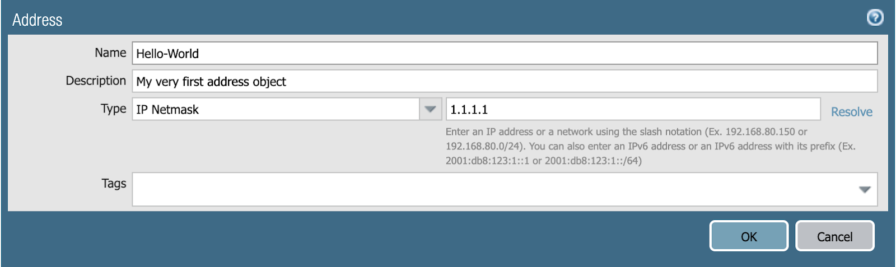
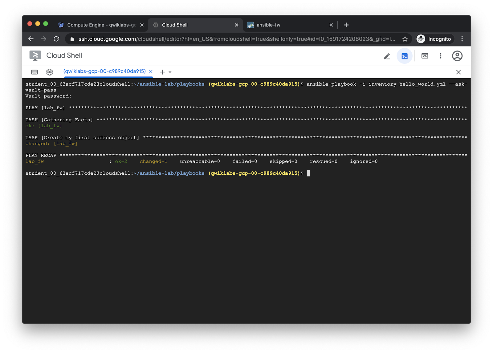

Run the Hello World playbook¶
The hello_world.yml playbook will create an address object:
---
- hosts: lab_fw
connection: local
vars:
device:
ip_address: '{{ ip_address }}'
username: '{{ username | default(omit) }}'
password: '{{ password | default(omit) }}'
api_key: '{{ api_key | default(omit) }}'
vars_files:
- creds.yml
collections:
- paloaltonetworks.panos
tasks:
- name: Create my first address object
panos_address_object:
provider: '{{ device }}'
name: 'Hello-World'
value: '1.1.1.1'
description: 'My very first address object'
commit: true

For more information, see the panos_address_object module documentation.
Run the playbook with ansible-playbook:
ansible-playbook -i inventory hello_world.yml --ask-vault-pass
Output:
